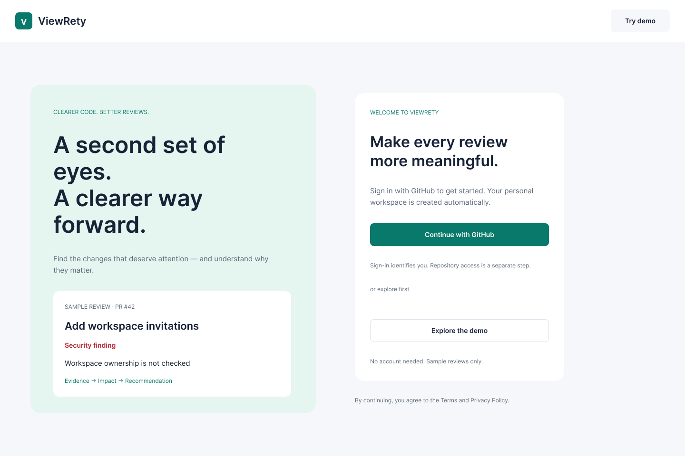
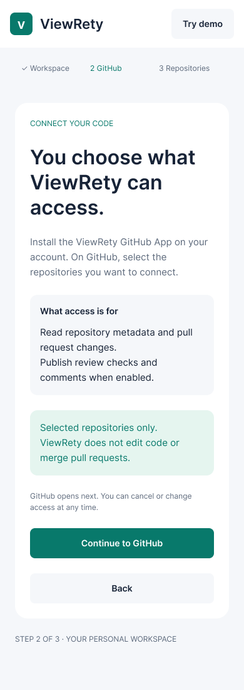
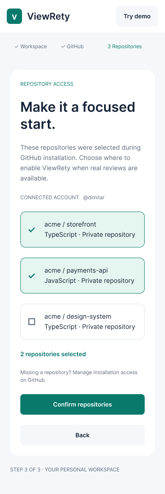

Trust boundaries
Separate identity, repository access and signed webhook delivery.
Find the changes that deserve attention — and understand why they matter. A code review platform for individual developers and small teams using GitHub.
Fictional examples. No sign-in, AI calls or repository access.
EXPLORE THE EXPERIENCE
An independent, prewritten example of the intended review experience. Filters and details work locally; no code is analyzed.
EXAMPLE REPOSITORY · ACME / STOREFRONT
The example handler accepts a workspace ID from the request and creates an invitation before checking whether the caller owns that workspace.
A signed-in user could attempt to invite someone into another workspace.
Check the caller's membership and invitation permission before creating the invitation. Add a negative test for a caller from a different workspace.
// Illustrative example — not application source
const { workspaceId, email } = request.body;
await invitations.create({ workspaceId, email });The example creates a new active invitation for every repeated submission.
A retried request can create duplicate invitations and repeated notifications.
Define one active invitation per workspace and normalized email. Handle repeated requests consistently and verify concurrent submissions.
The example acceptance screen shows a generic error when the invitation has expired.
The recipient cannot tell whether to retry or ask for a new invitation.
Show an explicit expired state and explain how to request another invitation without revealing private workspace information.
DESIGNED AROUND THE DEVELOPER
A clear entry point, an explanation of GitHub access, and a deliberate repository selection. The images show design examples, not a live connection.



BUILT WITH INTENTION
Next.js and TypeScript on the frontend. Java 25, Spring Boot and Spring Modulith on the backend. PostgreSQL with explicit migrations and workspace ownership.
Read the architecture notesSeparate identity, repository access and signed webhook delivery.
Persist webhook deliveries and handle duplicates before analysis.
A failed or incomplete review must stay visibly distinct from success.
Module, database, API contract and browser checks in the development projects.
WHERE THE PROJECT STANDS
Sample review demo, onboarding, a development GitHub App, repository settings and webhook ingestion exist in the private application.
Queue, worker, current-head diff, deterministic analysis adapter, real review states and an authenticated dashboard.
Evaluate AI quality and cost, add GitHub Checks, invite early users and choose sustainable infrastructure.
Active development. No paid AI analysis, production deployment or successful merge gate is being claimed. Read the roadmap →